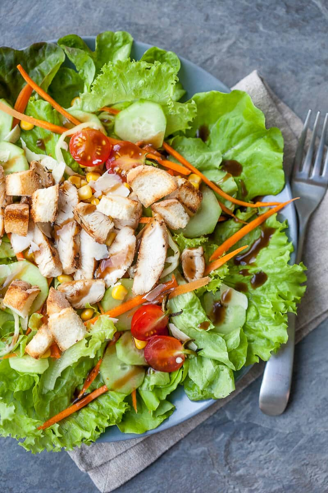

Green Goddess Chicken Salad

Fresh summer salad with chicken
This salad is packed with a variety of fresh vegetables, lean protein from the grilled chicken, and healthy fats from the optional avocado and nuts/seeds.
It's a balanced and satisfying meal option.
List of ingredients
- 2 cups mixed salad greens (spinach, lettuce, arugula, etc.)
- 4 oz (113g) grilled chicken breast, sliced
- 1/4 cup cherry tomatoes, halved
- 1/4 cup cucumber, sliced
- 1/4 cup sliced bell peppers (any color you prefer)
- 1/4 cup shredded carrots
- 2 tablespoons chopped red onion
- 2 tablespoons chopped fresh herbs (such as parsley or cilantro)
- 1 tablespoon extra virgin olive oil
- 1 tablespoon balsamic vinegar or lemon juice
- Salt and pepper to taste
Optional Additions:
- 1/4 avocado, sliced
- 2 tablespoons crumbled feta cheese
- 1 tablespoon toasted nuts or seeds (e.g., almonds, walnuts, pumpkin seeds)
Step by step instruction
- In a large salad bowl, combine the mixed salad greens, cherry tomatoes, cucumber, bell peppers, shredded carrots,
red onion, and fresh herbs.
- Add the sliced grilled chicken on top of the salad.
- In a small bowl, whisk together the extra virgin olive oil and balsamic vinegar or lemon juice to make the dressing.
Season with salt and pepper.
- Drizzle the dressing over the salad and toss gently to coat all the ingredients.
- If desired, add any optional additions like avocado slices, crumbled feta cheese, or toasted nuts/seeds.
- Serve immediately and enjoy!